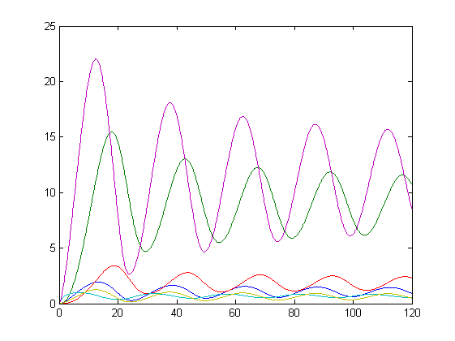

costMex
Contents
See also
Example
clear; %====================== % MODEL RELATED DATA %====================== inputs.model.input_model_type='charmodelC'; inputs.model.exe_type='costMex'; inputs.model.n_st=7; inputs.model.n_par=27; inputs.model.st_names=char('CL_m','CL_c','CL_n','CT_m','CT_c','CT_n','CP_n'); inputs.model.par_names=char('n1','n2','g1','g2','m1','m2','m3','m4','m5','m6',... 'm7','k1','k2','k3','k4','k5','k6','k7','p1','p2',... 'p3','r1','r2','r3','r4','q1','q2'); inputs.model.eqns=... char(... 'light=1',... 'dCL_m=q1*CP_n*light+n1*CT_n/(g1+CT_n)-m1*CL_m/(k1+CL_m)',... 'dCL_c=p1*CL_m-r1*CL_c+r2*CL_n-m2*CL_c/(k2+CL_c)',... 'dCL_n=r1*CL_c-r2*CL_n-m3*CL_n/(k3+CL_n)',... 'dCT_m=n2*g2^2/(g2^2+CL_n^2)-m4*CT_m/(k4+CT_m)',... 'dCT_c=p2*CT_m-r3*CT_c+r4*CT_n-m5*CT_c/(k5+CT_c)',... 'dCT_n=r3*CT_c-r4*CT_n-m6*CT_n/(k6+CT_n)',... 'dCP_n=(1-light)*p3-m7*CP_n/(k7+CP_n)-q2*light*CP_n'); inputs.model.par=[7.5038 0.6801 1.4992 3.0412 10.0982... 1.9685 3.7511 2.3422 7.2482 1.8981 1.2 3.8045... 5.3087 4.1946 2.5356 1.4420 4.8600 1.2 2.1994... 9.4440 0.5 0.2817 0.7676 0.4364 7.3021 4.5703 1.0]; %================================== % EXPERIMENTAL SCHEME RELATED DATA %================================== inputs.exps.n_exp=1; inputs.exps.n_s{1}=1000; inputs.exps.exp_y0{1}=zeros(1,inputs.model.n_st); inputs.exps.t_f{1}=120; inputs.exps.obs{1}='none'; inputs.pathd.run_overwrite='on';
More information regarding the inputs used in this example can be found here.
[inputs privstruct]=AMIGO_Prep(inputs);
***********************************
* AMIGO, Copyright @CSIC *
* AMIGO2_R1 [July 2013] *
***********************************
*Date: 28-Sep-2015
------>Pre processing....this may take a few seconds.
------>Checking inputs....
Problem folder has not been provided. Default: Problem
------> WARNING message
You have not provided the sampling times.
Equidistant sampling will be assumed for experiment 1
Note however that you may modify your input file by adding
inputs.exps.t_s{iexp}
------> WARNING message
You have not provided a measure of the standard deviation of your data noise.
Note that inputs.exps.std_dev{iexp} for experiment 1 will be fixed to 10%.
------> WARNING message
The maximum value for the global parameters has not been specified: inputs.PEsol.global_theta_max,
By default we will consider 1e12. Note that you should update your input file with reasonable values.
------> WARNING message
The minimum value for the global parameters has not been specified: inputs.PEsol.global_theta_max,
By default we will consider 0. Note that you should update your input file with reasonable values.
------> Generating C code ...
In file included from D:\AMIGO2_REPO_2014\AMIGO_R2012_cvodes\Kernel\libAMIGO\include\include_cvodes/sundials/sundials_types.h:50:0,
from D:\AMIGO2_REPO_2014\AMIGO_R2012_cvodes\Kernel\libAMIGO\include\include_cvodes/sundials/sundials_direct.h:26,
from D:\AMIGO2_REPO_2014\AMIGO_R2012_cvodes\Kernel\libAMIGO\include\include_cvodes/cvodes/cvodes_direct.h:31,
from D:\AMIGO2_REPO_2014\AMIGO_R2012_cvodes\Kernel\libAMIGO\include\include_cvodes/cvodes/cvodes_dense.h:24,
from D:\AMIGO2_REPO_2014\AMIGO_R2012_cvodes\Kernel\libAMIGO\include\include_amigo/AMIGO_model.h:6,
from D:\AMIGO2_REPO_2014\AMIGO_R2012_cvodes\Kernel\libAMIGO\include\include_amigo/amigoRHS.h:1,
from D:\AMIGO2_REPO_2014\AMIGO_R2012_cvodes\Results\Problem\amigoRHS.c:1:
D:\AMIGO2_REPO_2014\AMIGO_R2012_cvodes\Kernel\libAMIGO\include\include_cvodes/sundials/sundials_config.h:65:0: warning: "SUNDIALS_BLAS_LAPACK" redefined [enabled by default]
#define SUNDIALS_BLAS_LAPACK 1
^
D:\AMIGO2_REPO_2014\AMIGO_R2012_cvodes\Kernel\libAMIGO\include\include_cvodes/sundials/sundials_config.h:63:0: note: this is the location of the previous definition
#define SUNDIALS_BLAS_LAPACK 0
^
D:\AMIGO2_REPO_2014\AMIGO_R2012_cvodes\Results\Problem\amigoRHS.c:99:0: warning: "CL_m" redefined [enabled by default]
#define CL_m (amigo_model->sim_results[0][j])
^
D:\AMIGO2_REPO_2014\AMIGO_R2012_cvodes\Results\Problem\amigoRHS.c:12:0: note: this is the location of the previous definition
#define CL_m Ith(y,0)
^
D:\AMIGO2_REPO_2014\AMIGO_R2012_cvodes\Results\Problem\amigoRHS.c:100:0: warning: "CL_c" redefined [enabled by default]
#define CL_c (amigo_model->sim_results[1][j])
^
D:\AMIGO2_REPO_2014\AMIGO_R2012_cvodes\Results\Problem\amigoRHS.c:13:0: note: this is the location of the previous definition
#define CL_c Ith(y,1)
^
D:\AMIGO2_REPO_2014\AMIGO_R2012_cvodes\Results\Problem\amigoRHS.c:101:0: warning: "CL_n" redefined [enabled by default]
#define CL_n (amigo_model->sim_results[2][j])
^
D:\AMIGO2_REPO_2014\AMIGO_R2012_cvodes\Results\Problem\amigoRHS.c:14:0: note: this is the location of the previous definition
#define CL_n Ith(y,2)
^
D:\AMIGO2_REPO_2014\AMIGO_R2012_cvodes\Results\Problem\amigoRHS.c:102:0: warning: "CT_m" redefined [enabled by default]
#define CT_m (amigo_model->sim_results[3][j])
^
D:\AMIGO2_REPO_2014\AMIGO_R2012_cvodes\Results\Problem\amigoRHS.c:15:0: note: this is the location of the previous definition
#define CT_m Ith(y,3)
^
D:\AMIGO2_REPO_2014\AMIGO_R2012_cvodes\Results\Problem\amigoRHS.c:103:0: warning: "CT_c" redefined [enabled by default]
#define CT_c (amigo_model->sim_results[4][j])
^
D:\AMIGO2_REPO_2014\AMIGO_R2012_cvodes\Results\Problem\amigoRHS.c:16:0: note: this is the location of the previous definition
#define CT_c Ith(y,4)
^
D:\AMIGO2_REPO_2014\AMIGO_R2012_cvodes\Results\Problem\amigoRHS.c:104:0: warning: "CT_n" redefined [enabled by default]
#define CT_n (amigo_model->sim_results[5][j])
^
D:\AMIGO2_REPO_2014\AMIGO_R2012_cvodes\Results\Problem\amigoRHS.c:17:0: note: this is the location of the previous definition
#define CT_n Ith(y,5)
^
D:\AMIGO2_REPO_2014\AMIGO_R2012_cvodes\Results\Problem\amigoRHS.c:105:0: warning: "CP_n" redefined [enabled by default]
#define CP_n (amigo_model->sim_results[6][j])
^
D:\AMIGO2_REPO_2014\AMIGO_R2012_cvodes\Results\Problem\amigoRHS.c:18:0: note: this is the location of the previous definition
#define CP_n Ith(y,6)
^
D:\AMIGO2_REPO_2014\AMIGO_R2012_cvodes\Results\Problem\amigoRHS.c: In function 'amigoRHS_get_OBS':
D:\AMIGO2_REPO_2014\AMIGO_R2012_cvodes\Results\Problem\amigoRHS.c:126:2: warning: 'return' with a value, in function returning void [enabled by default]
return(amigo_model);
^
D:\AMIGO2_REPO_2014\AMIGO_R2012_cvodes\Results\Problem\amigoRHS.c: At top level:
D:\AMIGO2_REPO_2014\AMIGO_R2012_cvodes\Results\Problem\amigoRHS.c:130:0: warning: "CL_m" redefined [enabled by default]
#define CL_m (amigo_model->sens_results[0][j][k])
^
D:\AMIGO2_REPO_2014\AMIGO_R2012_cvodes\Results\Problem\amigoRHS.c:99:0: note: this is the location of the previous definition
#define CL_m (amigo_model->sim_results[0][j])
^
D:\AMIGO2_REPO_2014\AMIGO_R2012_cvodes\Results\Problem\amigoRHS.c:131:0: warning: "CL_c" redefined [enabled by default]
#define CL_c (amigo_model->sens_results[1][j][k])
^
D:\AMIGO2_REPO_2014\AMIGO_R2012_cvodes\Results\Problem\amigoRHS.c:100:0: note: this is the location of the previous definition
#define CL_c (amigo_model->sim_results[1][j])
^
D:\AMIGO2_REPO_2014\AMIGO_R2012_cvodes\Results\Problem\amigoRHS.c:132:0: warning: "CL_n" redefined [enabled by default]
#define CL_n (amigo_model->sens_results[2][j][k])
^
D:\AMIGO2_REPO_2014\AMIGO_R2012_cvodes\Results\Problem\amigoRHS.c:101:0: note: this is the location of the previous definition
#define CL_n (amigo_model->sim_results[2][j])
^
D:\AMIGO2_REPO_2014\AMIGO_R2012_cvodes\Results\Problem\amigoRHS.c:133:0: warning: "CT_m" redefined [enabled by default]
#define CT_m (amigo_model->sens_results[3][j][k])
^
D:\AMIGO2_REPO_2014\AMIGO_R2012_cvodes\Results\Problem\amigoRHS.c:102:0: note: this is the location of the previous definition
#define CT_m (amigo_model->sim_results[3][j])
^
D:\AMIGO2_REPO_2014\AMIGO_R2012_cvodes\Results\Problem\amigoRHS.c:134:0: warning: "CT_c" redefined [enabled by default]
#define CT_c (amigo_model->sens_results[4][j][k])
^
D:\AMIGO2_REPO_2014\AMIGO_R2012_cvodes\Results\Problem\amigoRHS.c:103:0: note: this is the location of the previous definition
#define CT_c (amigo_model->sim_results[4][j])
^
D:\AMIGO2_REPO_2014\AMIGO_R2012_cvodes\Results\Problem\amigoRHS.c:135:0: warning: "CT_n" redefined [enabled by default]
#define CT_n (amigo_model->sens_results[5][j][k])
^
D:\AMIGO2_REPO_2014\AMIGO_R2012_cvodes\Results\Problem\amigoRHS.c:104:0: note: this is the location of the previous definition
#define CT_n (amigo_model->sim_results[5][j])
^
D:\AMIGO2_REPO_2014\AMIGO_R2012_cvodes\Results\Problem\amigoRHS.c:136:0: warning: "CP_n" redefined [enabled by default]
#define CP_n (amigo_model->sens_results[6][j][k])
^
D:\AMIGO2_REPO_2014\AMIGO_R2012_cvodes\Results\Problem\amigoRHS.c:105:0: note: this is the location of the previous definition
#define CP_n (amigo_model->sim_results[6][j])
^
In file included from D:\AMIGO2_REPO_2014\AMIGO_R2012_cvodes\Kernel\libAMIGO\include\include_cvodes/sundials/sundials_types.h:50:0,
from D:\AMIGO2_REPO_2014\AMIGO_R2012_cvodes\Kernel\libAMIGO\include\include_cvodes/sundials/sundials_direct.h:26,
from D:\AMIGO2_REPO_2014\AMIGO_R2012_cvodes\Kernel\libAMIGO\include\include_cvodes/cvodes/cvodes_direct.h:31,
from D:\AMIGO2_REPO_2014\AMIGO_R2012_cvodes\Kernel\libAMIGO\include\include_cvodes/cvodes/cvodes_dense.h:24,
from D:\AMIGO2_REPO_2014\AMIGO_R2012_cvodes\Kernel\libAMIGO\include\include_amigo/AMIGO_model.h:6,
from D:\AMIGO2_REPO_2014\AMIGO_R2012_cvodes\Kernel\libAMIGO\include\include_amigo/amigoRHS.h:1,
from D:\AMIGO2_REPO_2014\AMIGO_R2012_cvodes\Kernel\libAMIGO\src\src_mxInterface\amigo_mexFunction.c:2:
D:\AMIGO2_REPO_2014\AMIGO_R2012_cvodes\Kernel\libAMIGO\include\include_cvodes/sundials/sundials_config.h:65:0: warning: "SUNDIALS_BLAS_LAPACK" redefined [enabled by default]
#define SUNDIALS_BLAS_LAPACK 1
^
D:\AMIGO2_REPO_2014\AMIGO_R2012_cvodes\Kernel\libAMIGO\include\include_cvodes/sundials/sundials_config.h:63:0: note: this is the location of the previous definition
#define SUNDIALS_BLAS_LAPACK 0
^
D:\AMIGO2_REPO_2014\AMIGO_R2012_cvodes\Kernel\libAMIGO\src\src_mxInterface\amigo_mexFunction.c: In function 'mexFunction':
D:\AMIGO2_REPO_2014\AMIGO_R2012_cvodes\Kernel\libAMIGO\src\src_mxInterface\amigo_mexFunction.c:21:2: warning: passing argument 8 of 'run_mexFunction' from incompatible pointer type [enabled by default]
run_mexFunction(nlhs, plhs, nrhs,prhs, amigoRHS,amigoRHS_get_OBS,amigoRHS_get_sens_OBS,amigo_Y_at_tcon);
^
D:\AMIGO2_REPO_2014\AMIGO_R2012_cvodes\Kernel\libAMIGO\src\src_mxInterface\amigo_mexFunction.c:6:16: note: expected 'void (*)(struct AMIGO_model, realtype, struct _generic_N_Vector *)' but argument is of type 'void (*)(void *, realtype, struct _generic_N_Vector *)'
EXPORTIT void run_mexFunction(int nlhs, mxArray *plhs[], int nrhs, const mxArray *prhs[],int(*rhs)(realtype,N_Vector, N_Vector, void*),void(obs_func)(void*),void(obs_sens_func)(void*),void(change_y_func)(AMIGO_model,realtype,N_Vector));
^
------>Files generated....
Save inputs and privstruct in a file and you can export the cost functions and simulation. The MEX function in located in:
disp(inputs.model.mexfile);
D:\AMIGO2_REPO_2014\AMIGO_R2012_cvodes\Results\Problem\costMex_problem
Simulate the model several time.
tic for i=1:10 feval(inputs.model.mexfunction,'sim_CVODES'); end toc figure; plot(inputs.exps.t_s{1},outputs.simulation{1});
Elapsed time is 0.025447 seconds.
See the Equivalent m-file model
options = odeset('RelTol',1e-7,'AbsTol',1e-7); handle_ode=@(t,y)model_4_ode15s(t,y,inputs.model.par);
Simulate the model several time.
tic for i=1:10 [T,Y] = ode15s(handle_ode,inputs.exps.t_s{1},inputs.exps.exp_y0{1},options); end toc figure; plot(inputs.exps.t_s{1},Y);
Elapsed time is 3.916884 seconds.
AMIGO_htmldoc_inputs(inputs,fullfile(pwd,'html','costmexex1.html'));